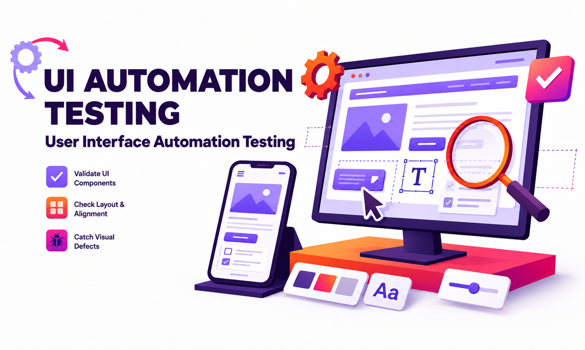
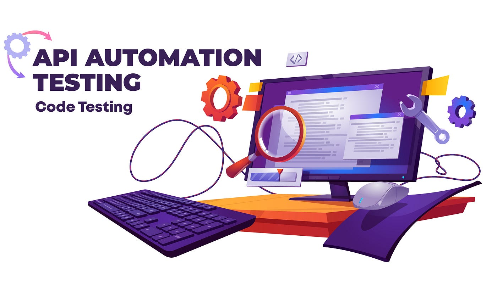
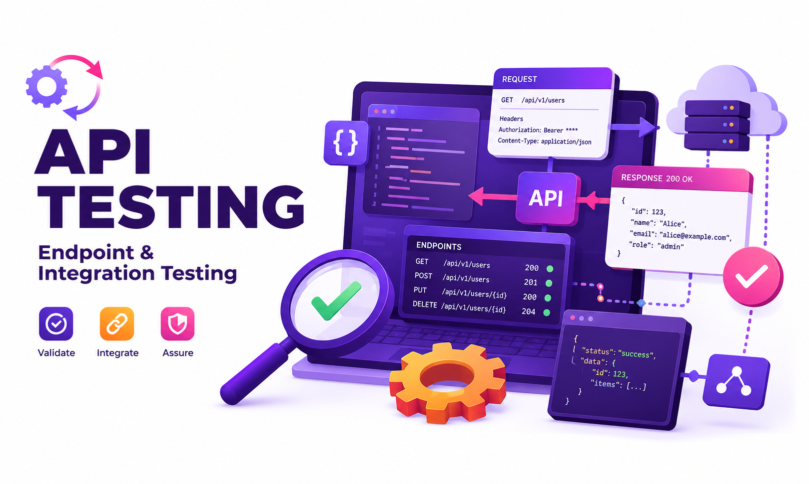
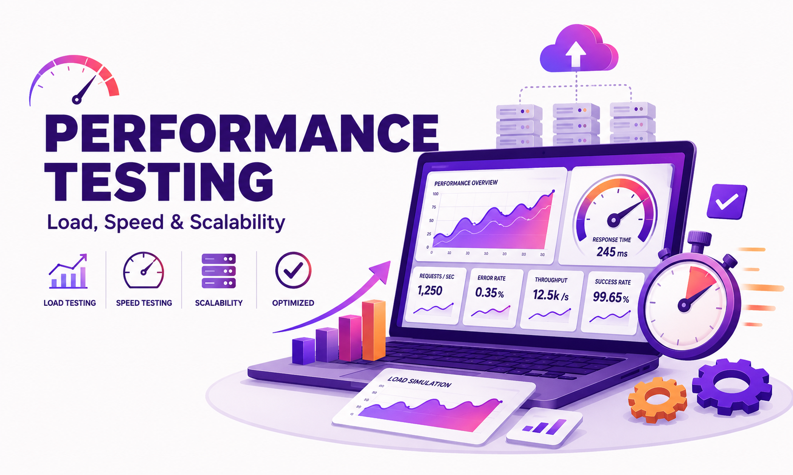
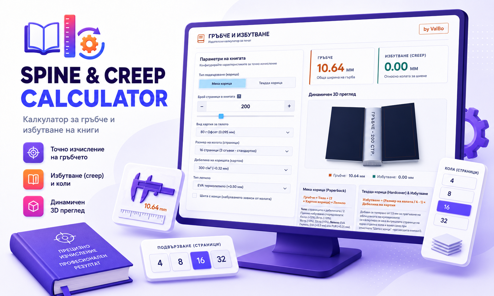
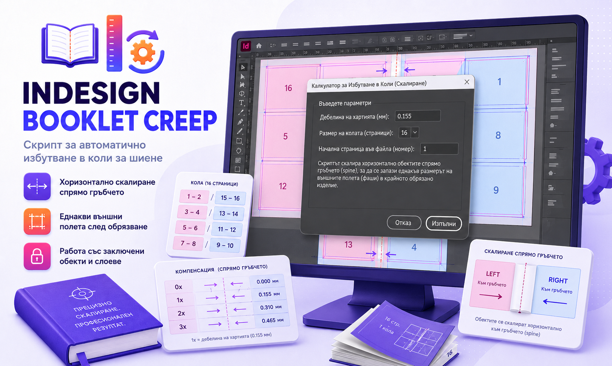
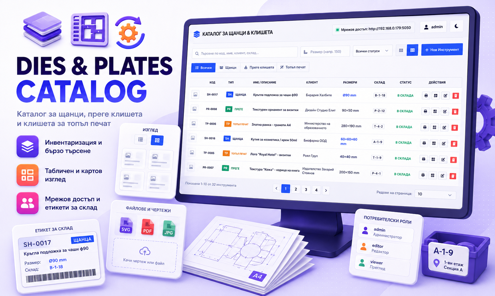
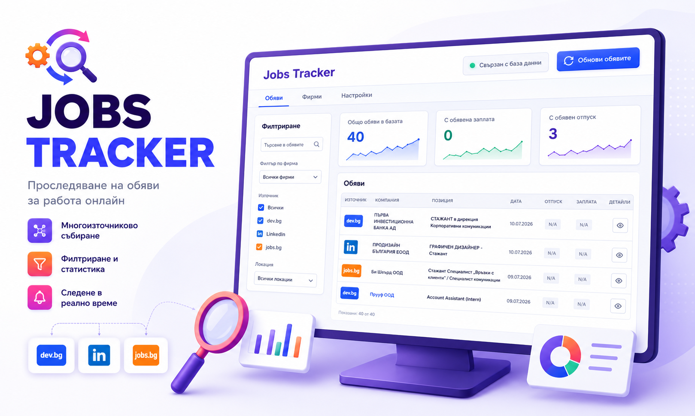

What I enjoy most is watching automated tests run unattended while I focus on reviewing the results. Getting there takes careful planning, research, and iteration, but there's real satisfaction in seeing a suite execute flawlessly while I sip my coffee. That's the workflow I aim to build into every project I join.

I'm fortunate to work in a field I'm genuinely passionate about. To transition into Automated Quality
Assurance, I completed intensive training at SoftUni and later graduated from Telerik Academy's Automation
QA program, building a solid foundation in test design, automation frameworks, and quality processes.
My background combines 20+ years of quality-control discipline from the printing industry with growing hands-on expertise in software QA automation. The printing industry sharpened my attention to detail and consistency in both manual and automated inspection; I've brought that same rigor into IT, where I now build automated test frameworks and apply structured QA processes at scale.
Exp over 5 years
Exp over 5 years
Exp over 5 years
I wrote my first lines of code back in 1984 on an early home computer, and reignited that interest professionally when I moved into QA automation. Today I have hands-on experience with C#, Java, and JavaScript, and build test automation using Playwright, Selenium, RestAssured, and RestSharp, complemented by API testing with Postman and performance testing with JMeter and k6.
I have dedicated over 20 years to quality control in the printing industry. This involved developing workflows for quality assurance of incoming files, maintaining control during printing, and overseeing finishing processes. I decided to further my development in this direction within the IT sector, as these processes are more advanced here. I've now been working in QA automation for 5 years.
A selection of test automation projects covering UI, API, and performance testing across multiple languages and frameworks. Explore the full source on GitHub.








Thanks for stopping by! Fill out the form below and I'll get back to you as soon as possible.